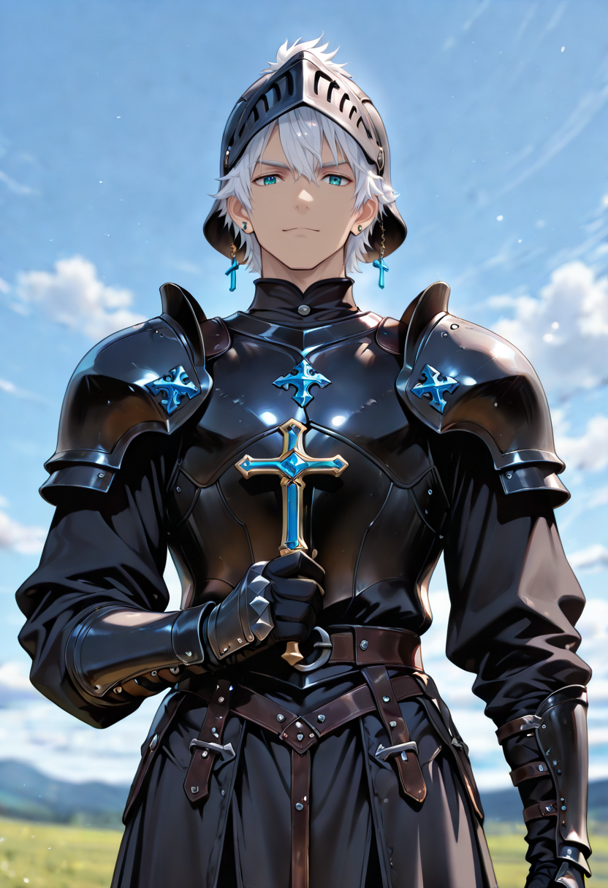

The Empire's Verdict
An Inquisitor carries two titles: religious authority and military rank. They are appointed at the intersection of doctrine and war, for cases the empire considers too complex for either soldiers or priests alone. The Forgotten fall squarely into that category.
The Inquisitor's theology is precise: life does not negotiate with death. What Malicott has created is not life — it is a refusal of the natural order, a wound in the world's structure that must be closed. They believe this genuinely, without malice, which is what makes them dangerous. They carry a mandate, not a grudge, and a mandate does not tire.
In the field, they command small but elite units and move with an unhurried authority that unsettles even experienced Forgotten fighters. They have been patient for decades. They intend to be patient for decades more.